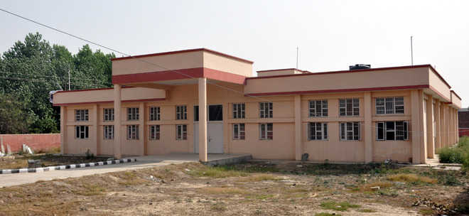

>HOSPITAL MANAGEMENT

IPD Management
- IPD module handles the patient admission to discharge journey effortlessly.
Patient Daycare
- Faster IP admissions, patient transfers, real-time bed management, and quick discharge
Operation Theater (OT) Management
- Accelerate OT work-list & transfer list, schedule surgery and efficiently take care of approvals.
Cath Lab Management
- Hospital management Software helps you to manage Cath-lab schedule, work-list, transfers, etc.
Diet Management
- Serve your patients the right diet with dietician schedules, diet plan creators, and pre-build diet templates.
Emergency Response Care
- Hospital Information Management system lets you improve the productivity of the ER team.
Patient Portal
- Patients can avail all services with a self-service portal
Alert Manager
- Notify patients without any delay
Queue Management
- Empower patients to avoid overcrowding in queues with online & walk-in appointments
Appointment
- Facilitate faster appointments with physicians
Online Hospital
- All-in-One Hospital Information Management System for patients, doctors and enterprise clients and their employees.
Patient Portal
- Patients can book a slot for appointments, teleconsultations, and make online payments
Corporate Admin Portal
- Reduce medical costs for your enterprise clients and their staff
Doctor Portal
- Improve the productivity of your doctors by managing the online profile of your doctors and their appointments
Helpline for emergency purpose:
Call - 108